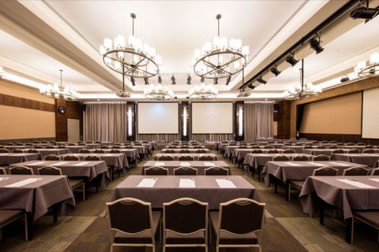
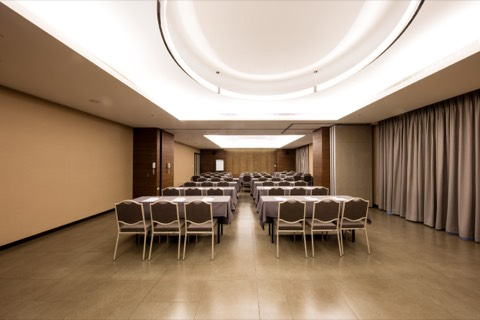
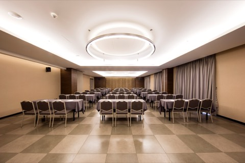
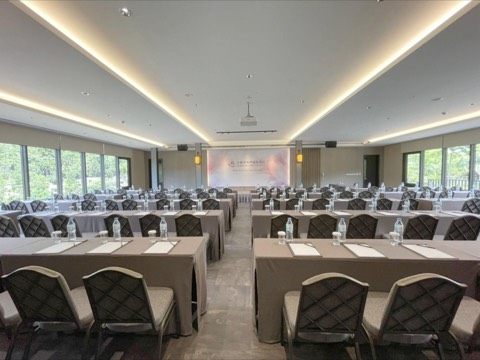

所有時間均為臺北時間（UTC+8）。場次名稱、地點與時間皆為暫定，將於論文錄取通知後正式公布。
各會議廳對應的實際地點，請見下方會議廳對照表。
可左右滑動查看所有會議室。
| 時間 | 大會廳5F 麗山廳 （外部網站，另開新分頁） | 會議室 A2F 麗景廳 A 廳 （外部網站，另開新分頁） | 會議室 B2F 麗景廳 B 廳 （外部網站，另開新分頁） | 會議室 C2F 麗泉廳 C1 （外部網站，另開新分頁） | 會議室 D7F 高峰廳 （外部網站，另開新分頁） | 海報區 |
|---|---|---|---|---|---|---|
| 08:00-17:00 | 報到 | |||||
| 09:20-09:30 | 開幕典禮 | |||||
| 09:30-10:20 | 主題演講 I講者待公布 | |||||
| 10:20-10:40 | 茶敘 | |||||
| 10:40-12:00 | 國科會智慧計算學門中堅躍升研究計畫口頭報告 | 國際口頭場次 1 | 國內口頭場次 1 | 跨域 AI 永續創新場次 1 | 產業軌道 1 | 海報場次 1 |
| 12:00-13:00 | 午餐 | TAAI 會員大會與理監事會 | 午餐 | |||
| 13:00-14:20 | 特別場次 1 | 國際口頭場次 2 | 國內口頭場次 2 | 跨域 AI 永續創新場次 2 | 產業軌道 2 | 海報場次 2 |
| 14:20-14:40 | 茶敘 | |||||
| 14:40-16:00 | 專題教學 | 國際口頭場次 3 | 國內口頭場次 3 | 跨域 AI 永續創新場次 3 | TAAI 碩博士論文獎口頭報告 | 海報場次 3 |
| 16:00-16:50 | 主題演講 II講者待公布 | |||||
| 16:50-17:40 | 國際座談主題演講講者參與 | |||||
| 18:00-20:00 | 歡迎晚宴 | |||||
可左右滑動查看所有會議室。
| 時間 | 大會廳5F 麗山廳 （外部網站，另開新分頁） | 會議室 A2F 麗景廳 A 廳 （外部網站，另開新分頁） | 會議室 B2F 麗景廳 B 廳 （外部網站，另開新分頁） | 會議室 C2F 麗泉廳 C1 （外部網站，另開新分頁） | 會議室 D7F 高峰廳 （外部網站，另開新分頁） | 海報區 |
|---|---|---|---|---|---|---|
| 08:00-17:00 | 報到 | |||||
| 09:00-09:50 | 主題演講 III講者待公布 | |||||
| 09:50-10:10 | 茶敘 | |||||
| 10:10-11:00 | 特別場次 2 | 國際口頭場次 4 | 國內口頭場次 4 | 跨域 AI 場次 | 智慧計算學門成果展場次 1 | 海報場次 4 |
| 11:10-12:00 | 青年女性之星場次 | 國際口頭場次 5 | 國內口頭場次 5 | AI CUP 頒獎場次 | 智慧計算學門成果展場次 2 | 海報場次 5 |
| 12:00-13:00 | 午餐 | |||||
| 13:00-14:20 | 國內座談 | 國際口頭場次 6 | 國內口頭場次 6 | 高中生口頭場次 1 | NAPAI Agentic AI 競賽場次 1 | 海報場次 6 |
| 14:20-14:40 | 茶敘 | |||||
| 14:40-15:30 | 特別場次 3 | 國際口頭場次 7 | 國內口頭場次 7 | 高中生口頭場次 2 | NAPAI Agentic AI 競賽場次 2 14:40-16:30 |
海報場次 7 |
| 15:40-16:30 | 主題演講 IV講者待公布 | 無場次 | ||||
| 16:30-17:00 | 閉幕典禮與頒獎 | |||||
* 暫定議程，正式議程與場次、地點安排確認後將於本頁公布。
| 議程表名稱 | 酒店會議廳 | 酒店網頁 |
|---|---|---|
| 大會廳 |  5F 麗山廳 （外部網站，另開新分頁）5F Lishan Hall | 場地介紹 （外部網站，另開新分頁） |
| 會議室 A |  2F 麗景廳 A 廳 （外部網站，另開新分頁）2F Lijing Hall A | 場地介紹 （外部網站，另開新分頁） |
| 會議室 B | 場地介紹 （外部網站，另開新分頁） | |
| 會議室 C |  2F 麗泉廳 C1 （外部網站，另開新分頁）2F Liquan Hall C1 | 場地介紹 （外部網站，另開新分頁） |
| 會議室 D |  7F 高峰廳 （外部網站，另開新分頁）7F Summit Hall | 場地介紹 （外部網站，另開新分頁） |
會議廳照片：大板根森林溫泉酒店（外部網站，另開新分頁）提供。
海報應清楚呈現以下資訊：論文標題（Paper Title）、作者姓名（Authors）、所屬機構（Affiliations）、研究動機與目的（Motivation and Objectives）、研究方法（Methods）、實驗結果或研究成果（Results）、結論（Conclusions）。
建議以圖表為主、文字為輔，並確保內容可於約 1–2 公尺距離清楚閱讀。
海報場次、展示位置及張貼／撤除時間將於會議議程公布後另行通知。
經事先核准以遠距方式發表的作者，請見報名頁 FAQ。